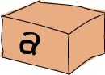

Types and Typeclasses
Type

之前我們有說過Haskell是Static Type，這表示在編譯時期每個表達式的型別都已經確定下來，這提高了程式碼的安全性。若程式碼中有讓布林值與數字相除的動作，就不會通過編譯。這樣的好處就是與其讓程序在運行時崩潰，不如在編譯時就找出可能的錯誤。Haskell中所有東西都有型別，因此在編譯的時候編譯器可以做到很多事情。
與java和pascal不同，Haskell支持型別推導。寫下一個數字，你就沒必要另告訴Haskell說“它是個數字”，它自己能推導出來。這樣我們就不必在每個函數或表達式上都標明其型別了。在前面我們只簡單涉及一下Haskell的型別方面的知識，但是理解這一型別系統對於Haskell 的學習是至關重要的。
型別是每個表達式都有的某種標籤，它標明了這一表達式所屬的範疇。例如，表達式True是boolean型，"hello"是個字元串，等等。
可以使用ghci來檢測表達式的型別。使用:t命令後跟任何可用的表達式，即可得到該表達式的型別，先試一下：
ghci> :t 'a' 'a' :: Char ghci> :t True True :: Bool ghci> :t "HELLO!" "HELLO!" :: [Char] ghci> :t (True, 'a') (True, 'a') :: (Bool, Char) ghci> :t 4 == 5 4 == 5 :: Bool

可以看出，:t命令處理一個表達式的輸出結果為表達式後跟::及其型別，::讀作“它的型別為”。凡是明確的型別，其首字母必為大寫。'a',如它的樣子，是Char型別，易知是個字元（character）。True是Bool型別，也靠譜。不過這又是啥，檢測"hello"得一個[Char]？這方括號表示一個List，所以我們可以將其讀作“一組字元的List”。而與List不同，每個Tuple都是獨立的型別，於是(True,"a")的型別是(Bool,Char)，而('a','b','c')的型別為(Char,Char,Char)。4==5一定回傳 False，所以它的型別為Bool。
同樣，函數也有型別。編寫函數時，給它一個明確的型別聲明是個好習慣，比較短的函數就不用多此一舉了。還記得前面那個過濾大寫字母的List Comprehension嗎？給它加上型別聲明便是這個樣子：
removeNonUppercase :: [Char] -> [Char] removeNonUppercase st = [ c | c <- st, c `elem` ['A'..'Z']]
removeNonUppercase的型別為[Char]->[Char]，從它的參數和回傳值的型別上可以看出，它將一個字元串映射為另一個字元串。[Char]與String是等價的，但使用String會更清晰：removeNonUppercase :: String -> String。編譯器會自動檢測出它的型別，我們還是標明了它的型別聲明。要是多個參數的函數該怎樣？如下便是一個將三個整數相加的簡單函數。
addThree :: Int -> Int -> Int -> Int addThree x y z = x + y + z
參數之間由->分隔，而與回傳值之間並無特殊差異。回傳值是最後一項，參數就是前三項。稍後，我們將講解為何只用->而不是Int,Int,Int->Int之類“更好看”的方式來分隔參數。
如果你打算給你編寫的函數加上個型別聲明卻拿不準它的型別是啥，只要先不寫型別聲明，把函數體寫出來，再使用:t命令測一下即可。函數也是表達式，所以:t對函數也是同樣可用的。
如下是幾個常見的型別：
Int表示整數。7可以是Int，但7.2不可以。Int是有界的，也就是說它由上限和下限。對32位的機器而言，上限一般是214748364，下限是-214748364。
Integer表示...厄...也是整數，但它是無界的。這就意味着可以用它存放非常非常大的數，我是說非常大。它的效率不如Int高。
factorial :: Integer -> Integer factorial n = product [1..n]
ghci> factorial 50 30414093201713378043612608166064768844377641568960512000000000000
Float表示單精度的浮點數。
circumference :: Float -> Float circumference r = 2 * pi * r
ghci> circumference 4.0 25.132742
Double表示雙精度的浮點數。
circumference' :: Double -> Double circumference' r = 2 * pi * r
ghci> circumference' 4.0 25.132741228718345
Bool表示布林值，它只有兩種值：True和False。
Char表示一個字元。一個字元由單引號括起，一組字元的List即為字元串。
Tuple的型別取決於它的長度及其中項的型別。注意，空Tuple同樣也是個型別，它只有一種值：()。
Type variables
你覺得head函數的型別是啥？它可以取任意型別的List的首項，是怎麼做到的呢？我們查一下！
ghci> :t head head :: [a] -> a
嗯! a是啥？型別嗎？想想我們在前面說過，凡是型別其首字母必大寫，所以它不會是個型別。它是個型別變數，意味着a可以是任意的型別。這一點與其他語言中的泛型(generic)很相似，但在Haskell中要更為強大。它可以讓我們輕而易舉地寫出型別無關的函數。使用到型別變數的函數被稱作“多態函數 ”，head函數的型別聲明裡標明了它可以取任意型別的List並回傳其中的第一個元素。
在命名上，型別變數使用多個字元是合法的，不過約定俗成，通常都是使用單個字元，如a,b,c,d...
還記得fst？我們查一下它的型別：
ghci> :t fst fst :: (a, b) -> a
可以看到fst取一個包含兩個型別的Tuple作參數，並以第一個項的型別作為回傳值。這便是fst可以處理一個含有兩種型別項的pair的原因。注意，a和b是不同的型別變數，但它們不一定非得是不同的型別，它只是標明了首項的型別與回傳值的型別相同。
Typeclasses入門
型別定義行為的介面，如果一個型別屬於某Typeclass，那它必實現了該Typeclass所描述的行為。很多從OOP走過來的人們往往會把Typeclass當成物件導向語言中的class而感到疑惑，厄，它們不是一回事。易於理解起見，你可以把它看做是Java的interface。
==函數的型別聲明是怎樣的？
ghci> :t (==) (==) :: (Eq a) => a -> a -> Bool
Note:判斷相等的==運算子是函數，+-*/之類的運算子也是同樣。在預設條件下，它們多為中綴函數。若要檢查它的型別，就必須得用括號括起使之作為另一個函數，或者說以首碼函數的形式呼叫它。
有意思。在這裡我們見到個新東西：=>符號。它左邊的部分叫做型別約束。我們可以這樣閲讀這段型別聲明：“相等函數取兩個相同型別的值作為參數並回傳一個布林值，而這兩個參數的型別同在Eq類之中（即型別約束）”
Eq這一Typeclass提供了判斷相等性的介面，凡是可比較相等性的型別必屬於Eq class。
ghci> 5 == 5 True ghci> 5 /= 5 False ghci> 'a' == 'a' True ghci> "Ho Ho" == "Ho Ho" True ghci> 3.432 == 3.432 True
elem函數的型別為:(Eq a)=>a->[a]->Bool。這是它在檢測值是否存在於一個list時使用到了==的緣故。
幾個基本的Typeclass：
Eq包含可判斷相等性的型別。提供實現的函數是==和/=。所以，只要一個函數有Eq類的型別限制，那麼它就必定在定義中用到了==和/=。剛纔說了，除函數意外的所有型別都屬於Eq，所以它們都可以判斷相等性。
Ord包含可比較大小的型別。除了函數以外，我們目前所談到的所有型別都屬於Ord類。Ord包中包含了<,>,<=,>=之類用於比較大小的函數。compare函數取兩個Ord類中的相同型別的值作參數，回傳比較的結果。這個結果是如下三種型別之一：GT,LT,EQ。
ghci> :t (>) (>) :: (Ord a) => a -> a -> Bool
型別若要成為Ord的成員，必先加入Eq家族。
ghci> "Abrakadabra" < "Zebra" True ghci> "Abrakadabra" `compare` "Zebra" LT ghci> 5 >= 2 True ghci> 5 `compare` 3 GT
Show的成員為可用字元串表示的型別。目前為止，除函數以外的所有型別都是Show的成員。操作ShowTypeclass，最常用的函數表示show。它可以取任一Show的成員型別並將其轉為字元串。
ghci> show 3 "3" ghci> show 5.334 "5.334" ghci> show True "True"
Read是與Show相反的Typeclass。read函數可以將一個字元串轉為Read的某成員型別。
ghci> read "True" || False True ghci> read "8.2" + 3.8 12.0 ghci> read "5" - 2 3 ghci> read "[1,2,3,4]" ++ [3] [1,2,3,4,3]
一切良好，如上的所有型別都屬於這一Typeclass。嘗試read "4"又會怎樣？
ghci> read "4"
< interactive >:1:0:
Ambiguous type variable `a' in the constraint:
`Read a' arising from a use of `read' at :1:0-7
Probable fix: add a type signature that fixes these type variable(s) ghci跟我們說它搞不清楚我們想要的是什麼樣的回傳值。注意呼叫read後跟的那部分，ghci通過它來辨認其型別。若要一個boolean值，他就 知道必須得回傳一個Bool型別的值。但在這裡它只知道我們要的型別屬於ReadTypeclass，而不能明確到底是哪個。看一下read函數的型別聲明吧：
ghci> :t read read :: (Read a) => String -> a
看？它的回傳值屬於ReadTypeclass，但我們若用不到這個值，它就永遠都不會得知該表達式的型別。所以我們需要在一個表達式後跟::的型別註釋，以明確其型別。如下：
ghci> read "5" :: Int 5 ghci> read "5" :: Float 5.0 ghci> (read "5" :: Float) * 4 20.0 ghci> read "[1,2,3,4]" :: [Int] [1,2,3,4] ghci> read "(3, 'a')" :: (Int, Char) (3, 'a')
編譯器可以辨認出大部分表達式的型別，但遇到read "5"的時候它就搞不清楚究竟該是Int還是Float了。只有經過運算，Haskell才會明確其型別；同時由於Haskell是靜態的，它還必須得在 編譯前搞清楚所有值的型別。所以我們就最好提前給它打聲招呼：“嘿，這個表達式應該是這個型別，省的你認不出來！”
Enum的成員都是連續的型別--也就是可枚舉。Enum類存在的主要好處就在於我們可以在Range中用到它的成員型別：每個值都有後繼子(successer)和前置子(predecesor)，分別可以通過succ函數和pred函數得到。該Typeclass包含的型別有：(),Bool,Char,Ordering,Int,Integer,Float和Double。
ghci> ['a'..'e'] "abcde" ghci> [LT .. GT] [LT,EQ,GT] ghci> [3 .. 5] [3,4,5] ghci> succ 'B' 'C'
Bounded的成員都有一個上限和下限。
ghci> minBound :: Int -2147483648 ghci> maxBound :: Char '\1114111' ghci> maxBound :: Bool True ghci> minBound :: Bool False
minBound和maxBound函數很有趣，它們的型別都是(Bounded a) => a。可以說，它們都是多態常量。
如果其中的項都屬於BoundedTypeclass，那麼該Tuple也屬於Bounded
ghci> maxBound :: (Bool, Int, Char) (True,2147483647,'\1114111')
Num是表示數字的Typeclass，它的成員型別都具有數字的特徵。檢查一個數字的型別：
ghci> :t 20 20 :: (Num t) => t
看樣子所有的數字都是多態常量，它可以作為所有NumTypeclass中的成員型別。以上便是NumTypeclass中包含的所有型別，檢測*運算子的型別，可以發現它可以處理一切的數字：
ghci> :t (*) (*) :: (Num a) => a -> a -> a
它只取兩個相同型別的參數。所以(5 :: Int) * (6 :: Integer)會引發一個型別錯誤，而5 * (6 :: Integer)就不會有問題。
型別只有親近Show和Eq，才可以加入Num。
Integral同樣是表示數字的Typeclass。Num包含所有的數字：實數和整數。而Intgral僅包含整數，其中的成員型別有Int和Integer。
Floating僅包含浮點型別：Float和Double。
有個函數在處理數字時會非常有用，它便是fromIntegral。其型別聲明為：fromIntegral :: (Num b, Integral a) => a -> b。從中可以看出，它取一個整數做參數並回傳一個更加通用的數字，這在同時處理整數和浮點時會尤為有用。舉例來說，length函數的型別聲明為：length :: [a] -> Int，而非更通用的形式，如(Num b) => length :: [a] -> b。這應該是歷史原因吧，反正我覺得挺蠢。如果取了一個List長度的值再給它加3.2就會報錯，因為這是將浮點數和整數相加。面對這種情況，我們就用fromIntegral (length [1,2,3,4]) + 3.2來解決。
注意到，fromIntegral的型別聲明中用到了多個型別約束。如你所見，只要將多個型別約束放到括號裡用逗號隔開即可。